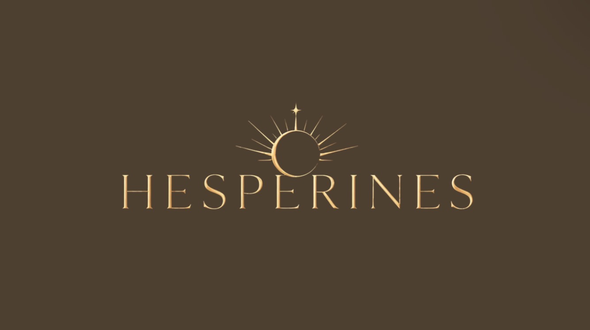

Une marque qui célèbre la féminité à travers des créations élégantes, audacieuses et intemporelles.
Voir plusCe dernier acte célèbre la liberté de créer, d’oser et de s’affranchir des conventions. Faire ce que l’on aime, non pour répondre aux attentes, mais pour se plaire à soi-même. Car rien n’est plus beau que ce qui est sincère, singulier et profondément personnel.

Une marque qui célèbre la féminité à travers des créations élégantes, audacieuses et intemporelles.
Voir plus
Un média qui décrypte l’histoire, les tendances et les influences artistiques de la mode.
Voir plus